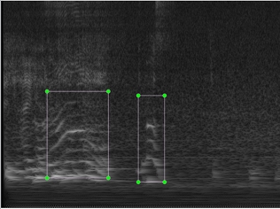
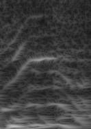
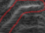
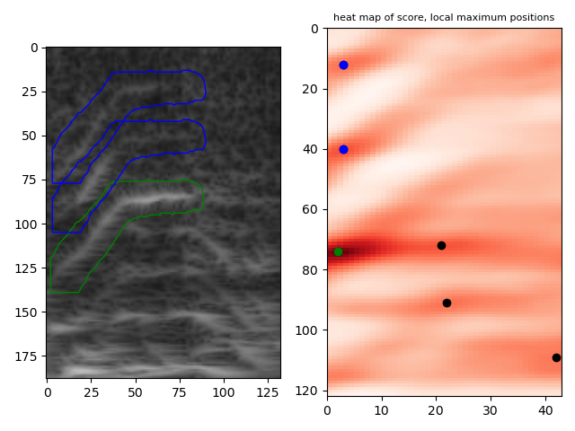
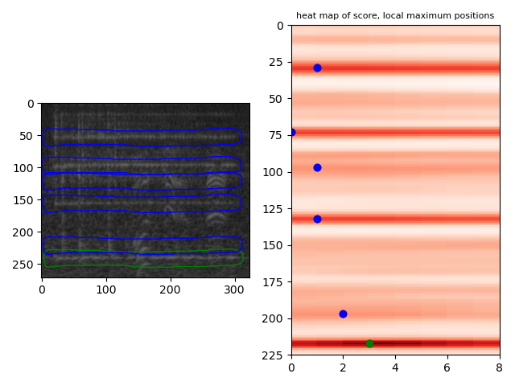

harmonic structure parts detect
This is an experiment of voice/instrument-sound harmonic structure parts detection by template matching with mask method.
github repository
description
This aims to detect each parts of harmonic structure, from spectrogram specified in voice/instrument-sound portion.
Template matching with mask method is used, because rectangle patch is inappropriate due to voice parts are bent and closed each other,
and rectangle patch cannot separate them.
prepare.py
save specified portion as an image file, from spectrogram and its annotation label file (yolo format).
Input spectrogram sample:

Output specified portion image:

make_mask.py
make mask data (npy file) from handwritten mask define image (BMP file)
Handwritten mask define image sample:

Output mask image:
template_matching.py
detect parts by template matching with mask method.
Result sample: green is the template, blue ones are detected.



License
MIT except peak_det.py
Regarding to peak_det.py, please refer the notice in the content.